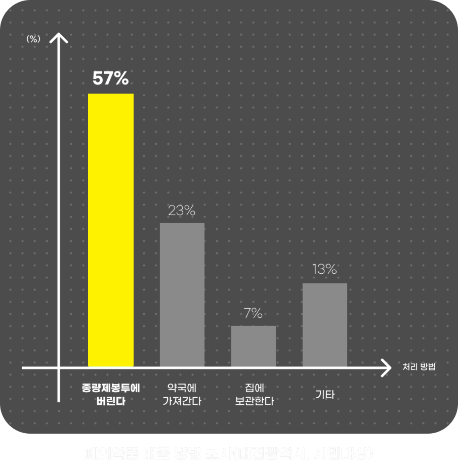
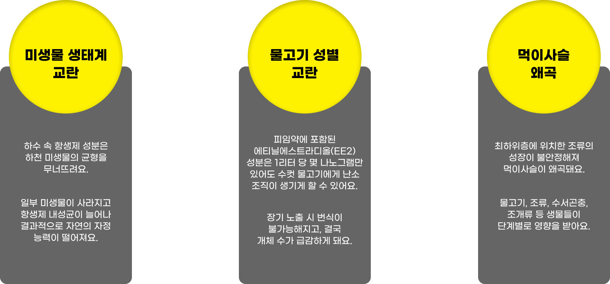
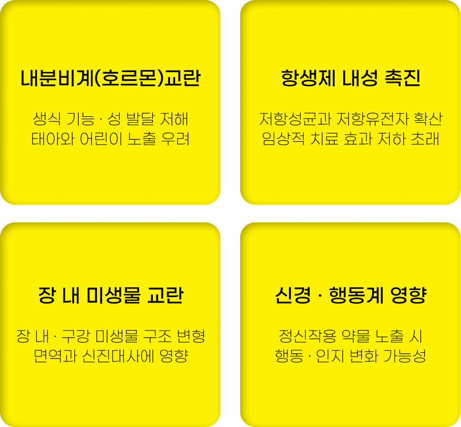
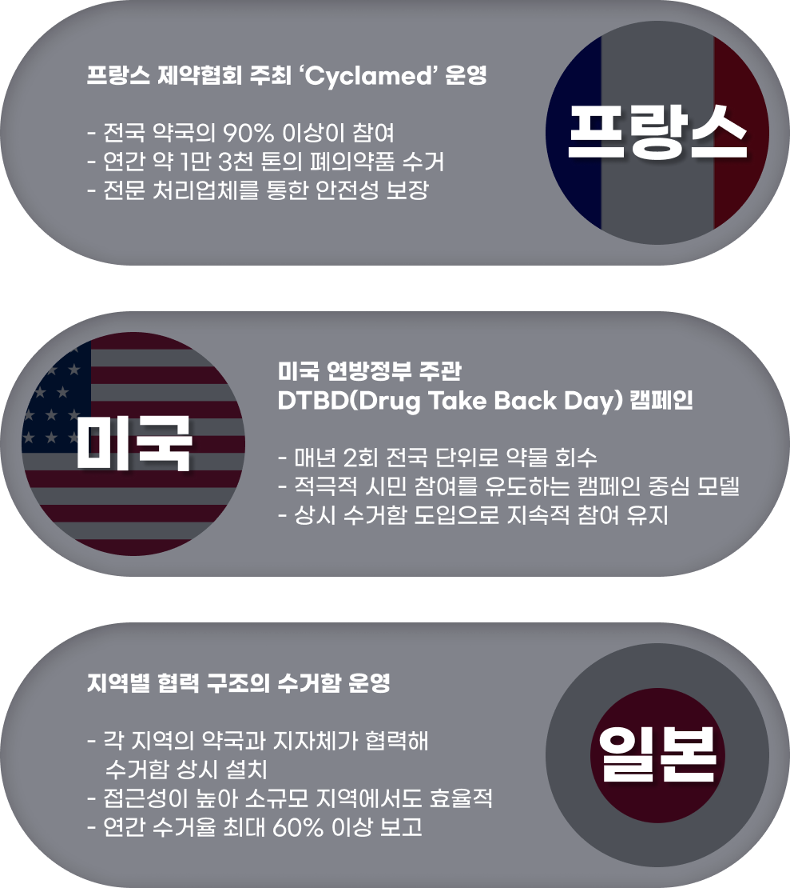
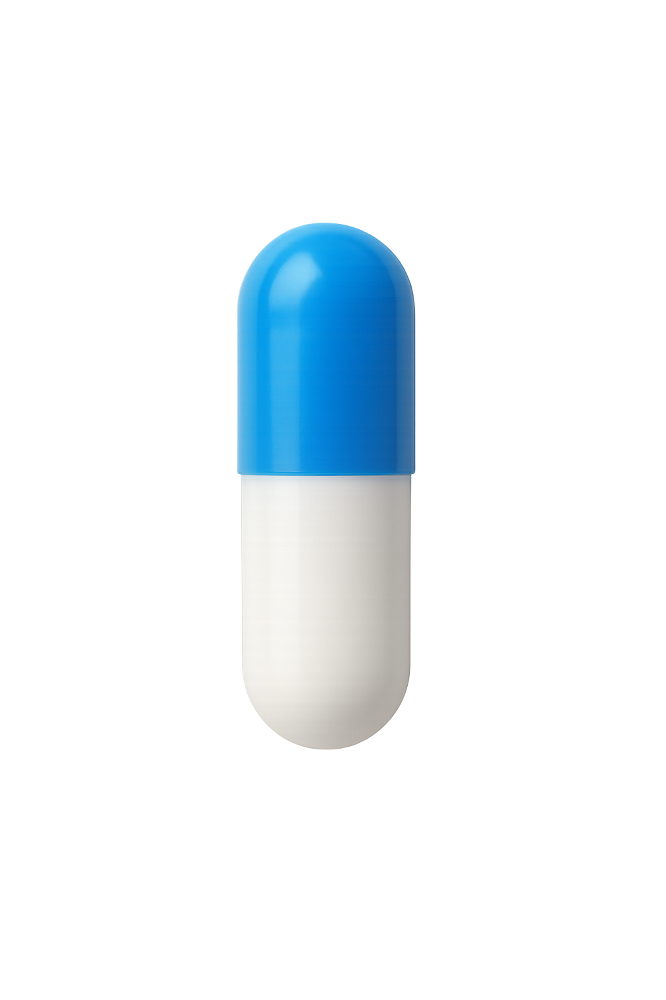
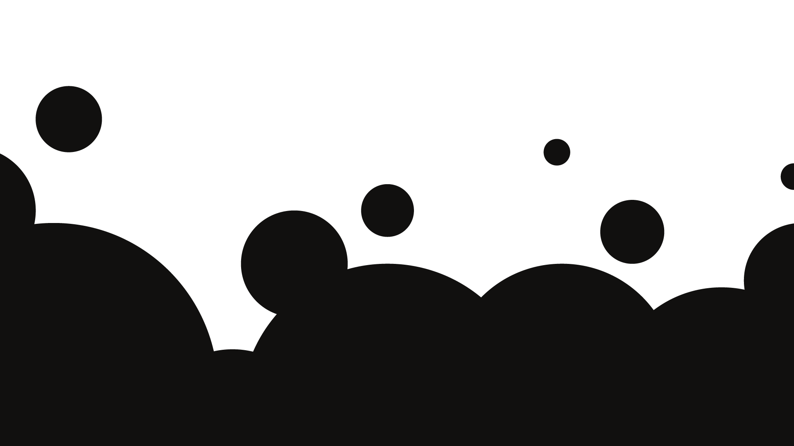

나를 치료하는 약,
우리를 병들게 하는 폐의약품
올바른 폐의약품 처리를 위해
사용한 뒤 애매하게 남는 의약품들.
다들 어떻게 처리하시나요?

실제로 시민들의 대부분은 폐의약품의 제대로 된 수거 방법을 알지 못하며, 절반 이상은 일반쓰레기와 함께 잘못 배출한다고 해요.

강물에 녹아든 폐의약품은
생태계에 어떤 피해를 가져올까요?

그리고 이렇게 약품으로 오염된 강물은
결국 다시 우리가 마시는 물로 돌아옵니다.
인간에게 미치는 영향도
이제는 결코 간과할 수 없는 수준이 되었죠.
아직 구체적으로 보고된 사례는 부족하지만,
장기간 노출되었을 경우 나타날 수 있는 부작용은 다양해요.

해외에서는 이 문제점을 해결하기 위해
이미 다양한 정책을 시행하고 있어요.

언제나 골칫거리가 되는 폐의약품.

이제는 결코 무시할 수 없는 문제가 되었습니다.
